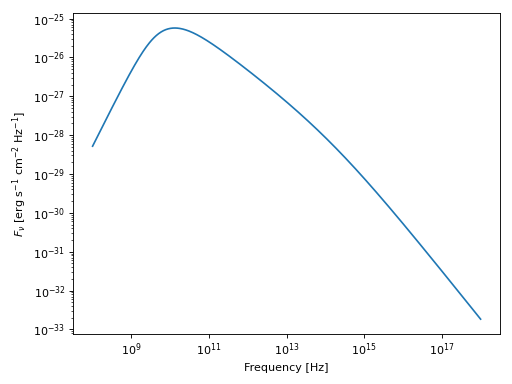
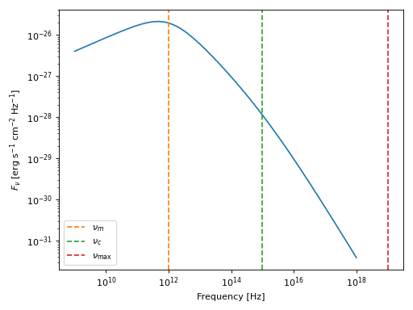

Synchrotron Spectral Energy Distributions#
Trilobite models synchrotron SEDs as log-space compositions of scale-free spectral segments, enabling numerically stable broadband spectra for astrophysical transients (GRBs, supernovae, TDEs). Each spectrum is parameterized by the ordering of characteristic break frequencies—the injection frequency \(\nu_m\), cooling frequency \(\nu_c\), self-absorption frequency \(\nu_a\), and maximum frequency \(\nu_{\max}\). For background on the underlying physics see Synchrotron Radiation Theory; for derivations of individual spectral regimes see Methods: Single-Zone Synchrotron SEDs.
Quick Start#
The following end-to-end example instantiates the most general SED class, converts physical source parameters to phenomenological SED parameters, and plots the resulting spectrum:
import numpy as np
from astropy import units as u
import matplotlib.pyplot as plt
from trilobite.radiation.synchrotron import PowerLaw_Cooling_SSA_SynchrotronSED
sed = PowerLaw_Cooling_SSA_SynchrotronSED()
nu = np.logspace(8, 18, 500) * u.Hz
# Convert physical parameters to SED parameters
D_L = 100 * u.Mpc
parameters = dict(
B=0.5 * u.G,
R=1e16 * u.cm,
gamma_min=100.0,
gamma_c=1e4,
gamma_max=1e7,
p=2.5,
f_V=1.0,
f_A=1.0,
epsilon_E=0.1,
epsilon_B=0.1,
luminosity_distance=D_L,
pitch_average=True,
)
norm = sed.from_physics_to_params(**parameters)
# Evaluate and plot
Fnu = sed.sed(nu, nu_m=norm['nu_m'],
nu_c=norm['nu_c'],
F_norm=norm['F_norm'],
nu_max=norm['nu_max'],
p=parameters['p'],
omega=norm['omega'],
gamma_m=parameters['gamma_min'])
plt.loglog(nu, Fnu)
plt.xlabel("Frequency [Hz]")
plt.ylabel(r"$F_\nu$ [erg s$^{-1}$ cm$^{-2}$ Hz$^{-1}$]")
plt.tight_layout()
plt.show()
(Source code, png, hires.png, pdf)
{kind=link}
{kind=link}

Choosing a SED Model#
Trilobite provides four physically motivated SED classes and one phenomenological option. Choose based on which physical processes are important for your source:
Model |
Cooling |
SSA |
Use when… |
|---|---|---|---|
✗ |
✗ |
Simple power-law spectra; no breaks beyond \(\nu_m\) |
|
✓ |
✗ |
Optically thin emission with a fast- or slow-cooling break |
|
✗ |
✓ |
Compact or dense sources with an SSA turnover; electrons do not cool appreciably |
|
✓ |
✓ |
Full broadband modeling (GRBs, SNe, TDEs); up to 8 spectral regimes |
SSA_SED_PowerLaw is a phenomenological
alternative where the break frequency is supplied directly by the user rather than derived from
microphysics, following the closure of DeMarchi et al.[1]. Use it
when you prefer to fit the SSA turnover without invoking any closure assumptions.
Evaluating a Spectrum#
Instantiation#
SED objects in Trilobite are intentionally lightweight. Instantiating an SED class requires no physical parameters:
from trilobite.radiation.synchrotron import PowerLaw_Cooling_SynchrotronSED
sed = PowerLaw_Cooling_SynchrotronSED()
SED instances do not store model parameters. Break frequencies, peak fluxes, and other physical quantities are supplied at evaluation time, not at initialization. This makes SED objects safe to reuse in parameter sweeps, inference loops, and population modeling without hidden state.
Calling sed()#
The primary interface for evaluating a synchrotron spectrum is sed().
Supply a frequency array and the phenomenological parameters:
import numpy as np
from astropy import units as u
nu = np.logspace(9, 18, 500) * u.Hz
Fnu = sed.sed(
nu,
F_norm=1e-26 * u.erg / (u.s * u.cm**2 * u.Hz),
nu_m=1e12 * u.Hz,
nu_c=1e15 * u.Hz,
nu_max=1e19 * u.Hz,
p=2.5,
)
All SED classes also support direct call syntax:
Fnu = sed(nu, F_norm=..., nu_m=..., nu_c=..., nu_max=..., p=2.5)
The following example shows a slow-cooling spectrum with annotated break frequencies:
import numpy as np
from astropy import units as u
import matplotlib.pyplot as plt
from trilobite.radiation.synchrotron import PowerLaw_Cooling_SynchrotronSED
sed = PowerLaw_Cooling_SynchrotronSED()
nu = np.logspace(9, 18, 500) * u.Hz
nu_m = 1e12 * u.Hz
nu_c = 1e15 * u.Hz
nu_max = 1e19 * u.Hz
Fnu = sed.sed(
nu,
F_norm=1e-26 * u.erg / (u.s * u.cm**2 * u.Hz),
nu_m=nu_m,
nu_c=nu_c,
nu_max=nu_max,
p=2.5,
)
plt.loglog(nu, Fnu)
plt.axvline(nu_m.value, color="C1", ls="--", label=r"$\nu_m$")
plt.axvline(nu_c.value, color="C2", ls="--", label=r"$\nu_c$")
plt.axvline(nu_max.value, color="C3", ls="--", label=r"$\nu_{\max}$")
plt.xlabel("Frequency [Hz]")
plt.ylabel(r"$F_\nu$ [erg s$^{-1}$ cm$^{-2}$ Hz$^{-1}$]")
plt.legend()
plt.tight_layout()
plt.show()
(Source code, png, hires.png, pdf)
{kind=link}
{kind=link}

Note
PowerLaw_Cooling_SynchrotronSED,
PowerLaw_SSA_SynchrotronSED, and
PowerLaw_Cooling_SSA_SynchrotronSED use
keyword-only arguments after nu; supplying parameters positionally will raise a
TypeError.
Normalizing from Physical Parameters#
If you have physical source parameters (magnetic field \(B\), radius \(R\),
energy partition fractions \(\varepsilon_E\), \(\varepsilon_B\), …) rather than
phenomenological ones, use from_physics_to_params()
to compute all required SED inputs in one step.
import numpy as np
from astropy import units as u
from trilobite.radiation.synchrotron import PowerLaw_Cooling_SSA_SynchrotronSED
sed = PowerLaw_Cooling_SSA_SynchrotronSED()
params = sed.from_physics_to_params(
B=0.5 * u.G,
R=1e16 * u.cm,
gamma_min=100.0,
gamma_c=1e4,
gamma_max=1e7,
p=2.5,
f_V=1.0,
f_A=1.0,
epsilon_E=0.1,
epsilon_B=0.1,
redshift=0.01,
pitch_average=True,
)
# params contains: F_norm, nu_m, nu_c, nu_a, nu_max, nu_peak, F_peak, regime (all with units)
Pass the result directly to sed():
nu = np.logspace(8, 18, 500) * u.Hz
Fnu = sed.sed(nu, **params, p=2.5)
Important
\(F_{\nu,\mathrm{norm}}\) is not necessarily the peak of the observed spectrum. In the presence of synchrotron self-absorption the actual peak flux (at \(\nu_a\)) will differ from \(F_{\nu,\mathrm{norm}}\). The normalization is always defined in the optically thin limit, regardless of absorption.
This convention ensures that the normalization parameter has a unique, physically transparent
meaning across all SED types and spectral regimes. The peak flux
\(F_{\nu,\mathrm{peak}}\) (the maximum of the observed SED) is computed internally from
\(F_{\nu,\mathrm{norm}}\) and returned as F_peak in the output dictionary. For a
detailed derivation of these mappings see SED Normalization.
Distance Options
The method accepts several equivalent ways to specify the cosmological distance:
# Redshift (luminosity distance resolved from default cosmology)
params = sed.from_physics_to_params(..., redshift=0.01)
# Explicit luminosity distance
params = sed.from_physics_to_params(..., luminosity_distance=150 * u.Mpc)
# Explicit angular diameter distance
params = sed.from_physics_to_params(..., angular_diameter_distance=148 * u.Mpc)
# Custom astropy cosmology
from astropy.cosmology import Planck18
params = sed.from_physics_to_params(..., redshift=0.01, cosmology=Planck18)
Inverting the SED#
Given observed peak flux and peak frequency, you can recover physical source parameters
(radius \(R\), magnetic field \(B\)) using
from_params_to_physics():
from trilobite.radiation.synchrotron import PowerLaw_Cooling_SSA_SynchrotronSED
import astropy.units as u
sed = PowerLaw_Cooling_SSA_SynchrotronSED()
physics = sed.from_params_to_physics(
regime=params["regime"],
F_peak=params["F_peak"],
nu_peak=params["nu_peak"],
gamma_min=100.0,
gamma_c=1e4,
p=2.5,
epsilon_E=0.1,
epsilon_B=0.1,
f_V=1.0,
f_A=1.0,
redshift=0.01,
pitch_average=True,
)
print(f"R = {physics['R']:.2e}, B = {physics['B']:.2e}")
Note
The cooling and SSA classes require an explicit regime argument because multiple distinct
spectral orderings can produce identical peak quantities. When chaining
from_physics_to_params → from_params_to_physics, pass params["regime"] directly
to guarantee a round-trip consistent inversion.
Warning
- The inverse closure provides a default physical interpretation, not a unique truth. The theory
documentation (Methods: Single-Zone Synchrotron SEDs) details the assumptions and limitations of the closure relations implemented in Trilobite. It is sometimes the case that a user needs a specific inversion which is not implemented currently.
Standalone Closure Functions#
All closure logic is also available as standalone functions in
one_zone_closure. These are useful when the SED class
interface is not needed, or for specialized closures (e.g. the implicit-cooling or De Marchi SSA
inversions) that are not exposed through any SED class method.
For relativistic sources in the coasting phase, the
invert_barniol_duran_coasting()
function implements the Duran et al.[2] equipartition inversion, which
simultaneously solves for the radius \(R\), bulk Lorentz factor \(\Gamma\),
equipartition energy \(E\), and the derived microphysical quantities
\(\gamma_e\), \(N_e\), and \(B\). See Theory Note: The Barniol-Duran Formalism for the
theoretical background.
Public Inversion Functions
Infer physical source parameters from an optically thin synchrotron peak. |
|
Infer physical parameters for an explicitly cooled optically thin spectrum. |
|
Infer physical parameters for an SSA synchrotron spectrum without cooling closure. |
|
Infer physical parameters for a cooled SSA synchrotron spectrum. |
|
Infer physical parameters using the implicit synchrotron-cooling closure. |
|
Infer physical parameters for SSA spectra with implicit synchrotron cooling. |
|
Invert an SSA turnover using the DeMarchi et al. (2022) analytic formulae. |
|
Invert a synchrotron peak using the Barniol-Duran coasting-phase equipartition closure. |
Private (Low-Level) Inversion Functions
The following private functions expose the same inversions without unit handling or cosmological distance resolution. They operate on logarithmic CGS inputs and are intended for inference routines where unit overhead must be minimized.
|
Infer physical source parameters from an optically thin synchrotron peak. |
|
Infer physical parameters for an explicitly cooled optically thin SED. |
|
Infer physical parameters for an SSA synchrotron SED without cooling. |
|
Infer physical parameters for an explicitly cooled SSA synchrotron SED. |
|
Infer physical parameters using the implicit synchrotron-cooling closure. |
|
Infer physical parameters for SSA spectra with implicit synchrotron cooling. |
|
Invert an SSA turnover using the DeMarchi et al. (2022) analytic closure. |
|
Invert a synchrotron peak using the Barniol-Duran coasting-phase equipartition closure. |
Inspecting the Spectral Regime#
For MultiSpectrumSynchrotronSED subclasses, you
can query which spectral regime was selected for a given set of parameters via
determine_sed_regime():
from trilobite.radiation.synchrotron import PowerLaw_Cooling_SSA_SynchrotronSED
import astropy.units as u
import numpy as np
sed = PowerLaw_Cooling_SSA_SynchrotronSED()
regime = sed.determine_sed_regime(
F_norm=1e-26 * u.erg / (u.s * u.cm**2 * u.Hz),
nu_m=1e12 * u.Hz,
nu_c=1e15 * u.Hz,
nu_max=1e19 * u.Hz,
omega=4 * np.pi,
gamma_m=300,
p=2.5,
)
print(regime) # e.g. "Spectrum3"
The returned identifier is a string of the form Spectrum1 … Spectrum8, corresponding to
the spectral orderings catalogued in Methods: Single-Zone Synchrotron SEDs. The mapping from regime name to
frequency ordering is also recorded in the class-level SPECTRUM_FUNCTIONS attribute.
This is useful for diagnosing which branch of the SED is being evaluated, particularly when debugging or verifying physical parameter ranges.
Quadrature SEDs#
See also
synch_numerical_theory for the mathematics underlying the quadrature algorithm, including kernel tabulation, the integration-by-parts form of the absorption coefficient, and the radiative transfer solution.
The gallery example sphx_glr_galleries_synchrotron_b_seds_plot_multi_component_numerical_SED.py for a worked example with a mixed thermal and power-law electron distribution.
The analytical SED classes described above are highly efficient, but they rest on the assumption that the injected electron distribution is a power law. That assumption breaks down in a number of physically important scenarios: thermal or quasi-thermal distributions near a shock front, particle spectra evolved numerically through cooling and adiabatic expansion, or any multi-component population that cannot be described by a single spectral index. In these cases the only reliable approach is direct numerical integration of the synchrotron emissivity over the full distribution.
The NumericalSynchrotronEngine provides this
capability. Given any electron distribution — supplied either as a callable function or a pre-sampled
array — it evaluates the emissivity integral and the self-absorption coefficient on a log-uniform
\((\nu, \gamma)\) grid, solves the radiative transfer equation for a homogeneous source slab, and
applies relativistic Doppler and cosmological redshift corrections to produce an observed flux density.
The entire computation is performed in log-space using logsumexp(), which keeps it
numerically stable across the large dynamic range typical of synchrotron spectra and fast enough for use
in inference hot loops.
Unlike the stateless SynchrotronSED subclasses,
the engine is stateful: it pre-tabulates the synchrotron kernel on a grid and caches the resulting
spline interpolator. This one-time setup cost is paid when the kernel is loaded; subsequent SED
evaluations are fast lookups against that table.
Quick Start#
The minimum workflow is to create the engine, load a kernel, define an electron distribution, and call
compute_flux_density():
import numpy as np
from astropy import units as u
from trilobite.radiation.synchrotron.SEDs.numerical import NumericalSynchrotronEngine
engine = NumericalSynchrotronEngine()
engine.load_avg_first_kernel() # isotropic pitch-angle distribution
def N(gamma):
"""Simple power-law electron distribution in cm^{-3}."""
return (1e4 * u.cm**-3) * (gamma / 100.0) ** (-2.5)
nu = np.geomspace(1e8, 1e18, 300) * u.Hz
F_nu = engine.compute_flux_density(
nu,
R=1e16 * u.cm,
B=0.5 * u.G,
N=N,
gamma_min=10.0,
gamma_max=1e7,
n_gamma=200,
luminosity_distance=100 * u.Mpc,
)
Kernels and Initialization#
The first step is always to load a synchrotron kernel. The engine maintains two independent interpolators: one for the fixed pitch-angle kernel \(F(x)\) and one for the pitch-angle-averaged kernel \(\bar{F}(x)\). The choice between them determines how the electron pitch-angle distribution is treated at evaluation time:
Call
load_avg_first_kernel()when the electron pitch angles are isotropically distributed — the appropriate default for most astrophysical environments. No pitch-angle argument is required at evaluation time, and the engine integrates against \(\bar{F}(x)\) automatically.Call
load_first_kernel()when a specific, fixed pitch angle \(\alpha\) will be supplied at evaluation time. The engine then integrates against \(F(x)\).
Either or both interpolators can be loaded on the same engine instance, and calling a load method a second time simply overwrites the existing grid — useful for changing the tabulation resolution without constructing a new object. Both methods accept keyword arguments that control the grid:
# Finer grid over a wider domain — useful for extreme distributions.
engine.load_avg_first_kernel(x_min=1e-6, x_max=1e3, num_points=2000)
# Supply an explicit grid.
engine.load_avg_first_kernel(x=np.geomspace(1e-6, 1e3, 2000))
The loaded status of each interpolator can be queried via
is_first_kernel_loaded()
and
is_avg_first_kernel_loaded().
Calling a compute method before the required kernel has been loaded raises a RuntimeError.
Defining the Electron Distribution#
Every compute method accepts N, the electron number density \(dN/d\gamma\), as either a
callable or an array.
Callable form. If N is a callable, the engine evaluates it on the quadrature \(\gamma\)
grid it builds internally from gamma_min, gamma_max, and n_gamma. The callable receives a
bare numpy.ndarray of Lorentz factors and must return the distribution as an
Quantity in \(\mathrm{cm}^{-3}\), or a bare array interpreted in those
units:
def N(gamma):
N0 = 1e4 * u.cm**-3
return N0 * (gamma / 100.0) ** (-2.5)
F_nu = engine.compute_flux_density(nu, B=B, R=R, N=N,
gamma_min=100.0, gamma_max=1e7, n_gamma=300, ...)
Pre-sampled array form. If N is an array, supply the corresponding \(\gamma\) values via
the gamma keyword. This form is useful when the distribution has been computed externally — for
example from a numerical ODE solver or a PIC simulation — and the quadrature grid is already fixed:
gamma_array = np.geomspace(1.0, 1e8, 500)
N_array = compute_my_distribution(gamma_array) # Quantity in cm^{-3}
F_nu = engine.compute_flux_density(nu, B=B, R=R, N=N_array, gamma=gamma_array, ...)
Multi-component distributions — such as a thermal pool plus a non-thermal tail — can be handled either by summing the distribution functions before passing them to the engine, or by evaluating the engine separately for each component and summing the resulting intensities. The former is more efficient; the latter is useful for isolating the spectral contribution of each component.
Radiative Quantities and Radiative Transfer#
The engine exposes the individual stages of the SED computation as separate methods, which are useful for diagnostics and for building custom pipelines. The key quantities are the emissivity \(j_\nu\), the self-absorption coefficient \(\alpha_\nu\), the source function \(S_\nu = j_\nu / \alpha_\nu\), and the specific intensity \(I_\nu\).
compute_emissivity()
returns \(j_\nu\) in \(\mathrm{erg\,s^{-1}\,cm^{-3}\,Hz^{-1}\,sr^{-1}}\);
compute_absorption()
returns \(|\alpha_\nu|\) in \(\mathrm{cm^{-1}}\);
compute_source_function()
returns \(S_\nu\) in \(\mathrm{erg\,s^{-1}\,cm^{-2}\,Hz^{-1}\,sr^{-1}}\). All three accept the
same N, gamma, gamma_min, gamma_max, and n_gamma arguments.
When a fixed pitch angle is required, pass it via the alpha keyword. Passing alpha=None (the
default) selects the pitch-angle-averaged path:
# Isotropic distribution (averaged kernel).
j_nu = engine.compute_emissivity(nu, B=0.5*u.G, N=N, gamma_min=100, gamma_max=1e7)
# Fixed pitch angle (requires load_first_kernel to have been called).
j_nu = engine.compute_emissivity(nu, B=0.5*u.G, N=N, alpha=np.pi/4 * u.rad,
gamma_min=100, gamma_max=1e7)
The radiative transfer equation for a homogeneous source of line-of-sight depth \(R\) is solved by
compute_rest_frame_specific_intensity()
implements this directly and returns \(I_\nu\) in the rest frame of the source. The
compute_specific_intensity()
variant additionally applies bulk Doppler and cosmological redshift corrections before returning the
observed specific intensity.
Observed Flux Density#
compute_flux_density()
is the primary end-user method. It applies the full chain — emissivity quadrature, absorption
coefficient, radiative transfer, Doppler/redshift boost — and returns the observed spectral flux density
\(F_\nu\) in \(\mathrm{erg\,s^{-1}\,cm^{-2}\,Hz^{-1}}\).
For sources with bulk motion, three parameters describe the relativistic state:
F_nu = engine.compute_flux_density(
nu, R=1e16*u.cm, B=0.5*u.G, N=N,
z=0.01, # cosmological redshift
beta=0.5, # bulk speed as fraction of c
theta=0.0*u.rad, # angle between bulk velocity and line of sight
luminosity_distance=100*u.Mpc,
)
For non-relativistic sources the defaults beta=0, theta=0, z=0 reduce the Doppler factor
to unity. The distance can be supplied in any of the same forms accepted by the analytical SED classes:
luminosity_distance, angular_diameter_distance, proper_distance, or a redshift z
combined with an optional cosmology argument. By default the projected source area is \(\pi
R^2\); pass A_eff to override this for non-spherical geometries.
API Reference#
Analytical SED Classes
Base class for synchrotron SED implementation. |
|
Base class for synchrotron SEDs with multiple discrete spectral regimes. |
|
The canonical 1-zone power-law synchrotron SED (uncooled, optically thin). |
|
Synchrotron SED with cooling but no self-absorption. |
|
Synchrotron SED with synchrotron self-absorption and no radiative cooling. |
|
Synchrotron spectral energy distribution with cooling and self-absorption. |
|
Synchrotron self-absorbed (SSA) broken power-law spectral energy distribution. |
Numerical SED Engine
Numerical synchrotron engine base class. |
|
Build and cache the interpolator for the first synchrotron kernel \(F(x)\). |
|
Build and cache the interpolator for the first synchrotron kernel \(F(x)\). |
|
Compute the comoving-frame synchrotron emissivity \(j_\nu\). |
|
Compute the comoving-frame synchrotron self-absorption coefficient \(|\alpha_\nu|\). |
|
Compute the comoving-frame synchrotron source function \(S_\nu = j_\nu / \alpha_\nu\). |
|
|
Compute the comoving-frame specific intensity \(I'_{\nu'} = S'_{\nu'}(1 - e^{-\tau'_{\nu'}})\). |
Compute the observer-frame specific intensity including Doppler boost and redshift. |
|
Compute the observer-frame spectral flux density \(F_\nu\). |
Implementation and Developer Notes#
Note
This section is for developers extending or debugging the SED system.
Class Hierarchy#
The synchrotron SED system is organized around a two-level abstract class hierarchy that separates interface from regime dispatch logic:
SynchrotronSED (ABC)
│ The minimal interface every SED must satisfy.
│ Methods: sed(), _log_opt_sed(), from_physics_to_params(),
│ from_params_to_physics(), _opt_from_physics_to_params(),
│ _opt_from_params_to_physics()
│
├── PowerLaw_SynchrotronSED
│ Optically thin, uncooled power-law SED (single regime).
│
├── SSA_SED_PowerLaw
│ Phenomenological SSA broken power-law SED (De Marchi closure).
│
└── MultiSpectrumSynchrotronSED (ABC)
Adds automatic regime selection and dispatch.
Methods: determine_sed_regime(), _compute_sed_regime(),
_log_opt_sed_from_regime()
Attribute: SPECTRUM_FUNCTIONS
│
├── PowerLaw_Cooling_SynchrotronSED
│ Optically thin SED with radiative cooling (2 regimes).
│
├── PowerLaw_SSA_SynchrotronSED
│ Non-cooling SED with SSA (2 regimes).
│
└── PowerLaw_Cooling_SSA_SynchrotronSED
Full SED: cooling + SSA (up to 8 regimes).
The key design principle is that SED objects are stateless: no physical parameters are stored at instantiation. All parameters are supplied at call time, making objects safe to reuse across parameter sweeps or inference loops.
Low-Level Interface#
While most users will interact with synchrotron spectra through the high-level SED classes, Trilobite also exposes a low-level interface that provides direct access to the building blocks from which those SEDs are constructed. It is primarily intended for:
Defining custom synchrotron SEDs not covered by the built-in classes,
Implementing or testing new physical regimes or closure relations,
Inspecting and validating the numerical components underlying the high-level API,
Debugging or benchmarking normalization and regime-selection logic.
The low-level interface is organized into three categories: shape functions, SED functions, and SSA utilities.
Shape Functions#
Shape functions define the mathematical form of spectral transitions independently of any specific physical scenario. They operate entirely in logarithmic space.
Shape Function API
|
Logarithm of a scale-free smoothed broken power law (SFBPL). |
|
Logarithm of a smooth high-frequency exponential cutoff. |
|
Smoothed broken power-law (BPL) SED. |
log_smoothed_SFBPL()— the core scale-free smoothed broken power-law (SFBPL) factor. Multiple breaks are composed by adding SFBPL factors in log-space.log_exp_cutoff_sed()— smooth exponential truncation at high frequencies (the \(\nu_{\max}\) cutoff).smoothed_BPL()— un-logged smoothed broken power law, used bySSA_SED_PowerLaw.
Log-Space SED Composition Example
import numpy as np
from trilobite.radiation.synchrotron.SEDs._one_zone_functions import (
log_smoothed_SFBPL,
log_exp_cutoff_sed,
)
log_nu = np.linspace(np.log(1e9), np.log(1e20), 500)
log_nu_m = np.log(1e12)
log_nu_c = np.log(1e15)
log_nu_max = np.log(1e19)
p = 2.5
# Baseline power law: F ~ nu^(1/3)
log_sed = (1.0 / 3.0) * log_nu
# Break at nu_m: slope 1/3 → -(p-1)/2
log_sed += log_smoothed_SFBPL(log_nu - log_nu_m, 1.0 / 3.0, -(p - 1) / 2.0, -0.5)
# Break at nu_c: slope -(p-1)/2 → -p/2
log_sed += log_smoothed_SFBPL(log_nu - log_nu_c, -(p - 1) / 2.0, -p / 2.0, -0.5)
# High-frequency exponential cutoff
log_sed += log_exp_cutoff_sed(log_nu - log_nu_max)
SED Functions#
SED functions encode complete synchrotron spectral shapes for specific physical scenarios and frequency orderings, as derived in Methods: Single-Zone Synchrotron SEDs. Each function operates entirely in logarithmic space, assumes all inputs are already validated and dimensionless, and returns the logarithm of the scale-free spectral shape with no normalization.
Naming convention:
_log_<electron_pop>_<sed_type>_sed_<physics tags>_<spectrum number>
For example: _log_powerlaw_sbpl_sed_ssa_cool_7
Available Low-Level SED Functions
The following low-level SED functions are implemented in
trilobite.radiation.synchrotron.SEDs._one_zone_functions. Each corresponds
to a unique spectral regime defined in Methods: Single-Zone Synchrotron SEDs.
Power Law (No Cooling, No SSA)
|
Logarithm of the synchrotron SED for a non-cooling power-law electron population. |
Power Law + Cooling
|
Logarithm of the synchrotron SED in the fast-cooling regime. |
|
Logarithm of the synchrotron SED in the slow-cooling regime. |
Power Law + SSA
|
Logarithm of the synchrotron SED with SSA, assuming the ordering \(\nu < \nu_a < \nu_m\). |
|
Logarithm of the synchrotron SED with SSA, assuming the ordering \(\nu < \nu_m < \nu_a\). |
Power Law + Cooling + SSA
|
Synchrotron SED with SSA in the slow-cooling regime, assuming the ordering \(\nu < \nu_a < \nu_m < \nu_c\). |
|
Synchrotron SED with SSA in the slow-cooling regime, assuming the ordering \(\nu < \nu_m < \nu_a < \nu_c\). |
|
Synchrotron SED with synchrotron self-absorption (SSA) in the fast-cooling regime. |
|
Synchrotron SED with SSA assuming the ordering \(\nu < \nu_{ac} < \nu_a < \nu_m\). |
|
Synchrotron SED with SSA in the slow-cooling regime, assuming the ordering \(\nu < \nu_m < \nu_a\). |
|
Synchrotron SED with SSA in the fast-cooling regime, assuming the ordering \(\nu_c < \nu_m < \nu_a\). |
SSA Utilities#
SSA utilities compute the self-absorption frequency \(\nu_a\) and select the physically consistent SSA regime for a given set of input parameters.
SSA Utility API
|
Compute candidate synchrotron self-absorption frequencies in the absence of cooling. |
|
Compute candidate synchrotron self-absorption frequencies. |
|
Select the physically consistent SSA synchrotron spectral regime in the absence of radiative cooling. |
|
Determine the physically consistent SSA synchrotron spectral regime. |
Extending the SED System#
Adding a new synchrotron SED model is straightforward. The system is designed so that new regimes or physical processes can be incorporated without modifying existing code.
Step 1: Implement any new low-level SED functions
If the new SED requires spectral shapes not already provided, add them to
trilobite.radiation.synchrotron.SEDs._one_zone_functions following the established naming
convention. Each function should:
Accept
log_nu(natural log of frequency in Hz) and regime-specific break frequencies in the same log form,Return the natural logarithm of the scale-free spectral shape (no normalization),
Be fast and branch-free.
Step 2: Subclass the appropriate base class
For a single-regime SED (like PowerLaw_SynchrotronSED),
subclass SynchrotronSED and implement:
_log_opt_sed(self, log_nu, **params)— the log-space kernel,sed(self, nu, **params)— the unit-aware public interface.
For a multi-regime SED (like
PowerLaw_Cooling_SSA_SynchrotronSED), subclass
MultiSpectrumSynchrotronSED and implement:
_compute_sed_regime(self, **params) -> (regime, derived)— regime logic,determine_sed_regime(self, **params) -> regime— unit-aware public wrapper,_log_opt_sed_from_regime(self, log_nu, regime, **params)— regime dispatch kernel,SPECTRUM_FUNCTIONS— class attribute mapping regime identifiers to functions.
The inherited _log_opt_sed orchestrates regime determination and dispatch automatically;
subclasses should not override it.
Step 3: Implement closure relations (optional)
If physical inversion is needed, implement:
_opt_from_physics_to_params(self, log_B, log_R, ...)— log-space forward closure,from_physics_to_params(self, B, R, ...)— unit-aware public wrapper,_opt_from_params_to_physics(self, log_F_peak, ...)— log-space inversion,from_params_to_physics(self, F_peak, ...)— unit-aware public wrapper.
Step 4: Register and export
Add the new class to __all__ in trilobite.radiation.synchrotron.SEDs.one_zone and to the
parent trilobite.radiation.synchrotron.SEDs.__init__ re-exports.
Minimal SED Skeleton
import numpy as np
import astropy.units as u
from trilobite.radiation.synchrotron.SEDs.one_zone import SynchrotronSED
from trilobite.utils.misc_utils import ensure_in_units
class MySynchrotronSED(SynchrotronSED):
"""Custom synchrotron SED."""
def _log_opt_sed(self, log_nu, log_F_norm, log_nu_0, alpha):
# All inputs are dimensionless CGS log-values.
# Spectral shape: F ~ (nu/nu_0)^alpha
return log_F_norm + alpha * (log_nu - log_nu_0)
def sed(self, nu, F_norm, nu_0, alpha):
nu = ensure_in_units(nu, "Hz")
F_norm = ensure_in_units(F_norm, "erg cm^-2 s^-1 Hz^-1")
nu_0 = ensure_in_units(nu_0, "Hz")
log_F = self._log_opt_sed(
np.log(nu), np.log(F_norm), np.log(nu_0), alpha
)
return np.exp(log_F) * u.erg / (u.cm**2 * u.s * u.Hz)
The low-level interface should be viewed as the implementation layer of the synchrotron SED system. High-level SED classes orchestrate these components to provide a stable, physically meaningful, and easy-to-use user-facing API. Most users will never need to interact with the low-level functions directly. However, they are fully documented and exposed to support transparency, extensibility, and rigorous validation of synchrotron spectral models.